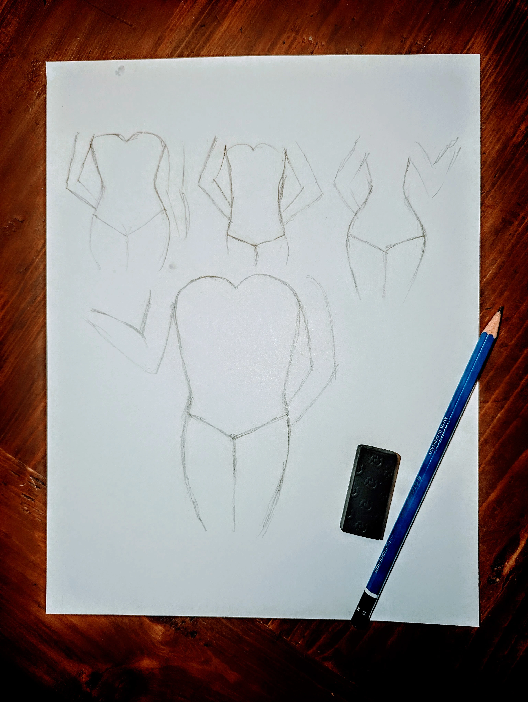
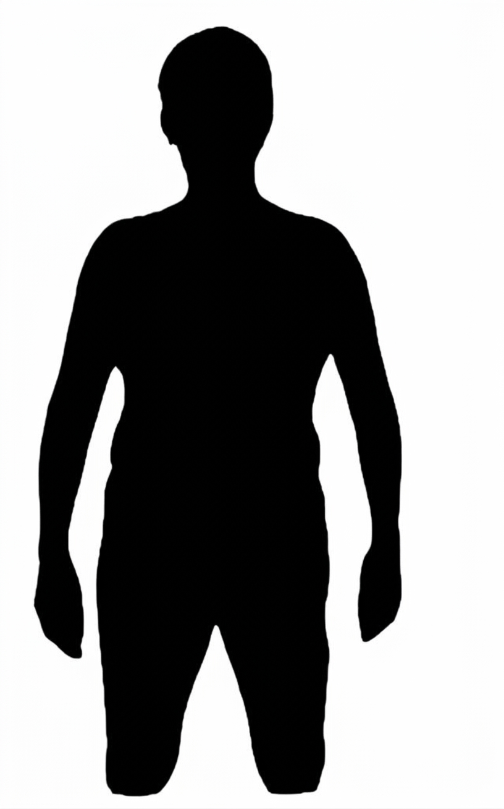
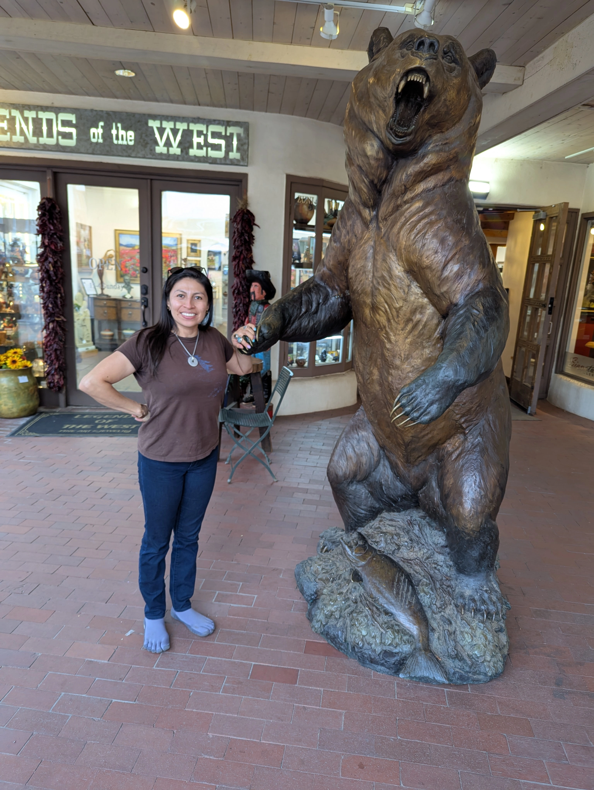

When you become familiar with the shape of your body, the next step will be learning about styles that flatter those proportions, and by flatter I mean that we dress in a way that creates symmetry, or a certain degree of harmony that psychologically makes others see you as attractive.
An easy way to see the shape of your body is taking a photo of yourself wearing your underwear only, with your phone placed on a surface at torso level and setting a 5 to 10 second timer while you stand in front of the phone against the wall looking straight. You can notice whether your shape is hour glass, rectangle, apple, pear, or reverse triangle.

Now, because I have a reverse triangle body shape that's what I'm going to focus on. The objective is not to hide broad shoulders. It is to understand visual proportions and make more intentional clothing choices. It was just 4 weeks ago that I noticed by looking at a photo that someone took over a crowd where I was standing to the front of the crowd, that I realized skinny jeans combined with tight fitting tops are definitely not a good combination for me.

Sometimes, the problem isn't the clothes, but the way its design interacts with your natural proportions. An off-the-shoulder dress isn't inherently bad. It simply emphasizes a particular horizontal line. Below are some starts and stops to keep in mind when you are shopping for clothes, or better yet, when you are ready to start making your own clothes, or having them made by someone else to your precise measurements.
Again, these are focused on reverse triangle body shape. The focus of your outfit should be on keeping the shoulder area relatively clean and to introduce visual interest, movement and volume toward the waist, hips and lower body. Fit and fabric also matter.
Stop wearing
- Anything with exaggerated shoulders, or gathers at the shoulders.
- Ruffles at the shoulders or sleeves
- Boat necks, wide square necklines and off-the-shoulder styles.
- Boxy silhouettes, heavy knits and thick fabrics that add unnecessary volume.
- Puffy jackets to the waist
- Oversized collars, epaulettes, shoulder embellishments and large chest decorations.
- Skinny jeans…

Start wearing
- Cowl necks
- V-neck and scoop-neck tops
- A-line skirts
- Wide-leg and bootcut pants
- Peplum tops
- Wrap tops, diagonal draping and asymmetrical necklines
- Belted blouses that gently define the waist
These observations are obviously for maybe certain environments or events, I will probably continue wearing my skinny jeans on the weekends, although with a peplum top, or a flared leather jacket 🤔
And that is what I am excited about designing and making in the future, clothing that work for gals with a large back like mine.
Sandra